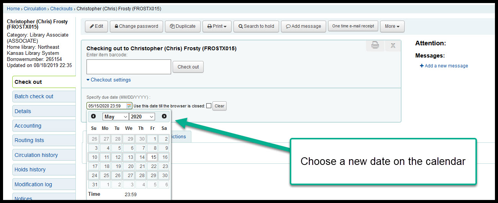
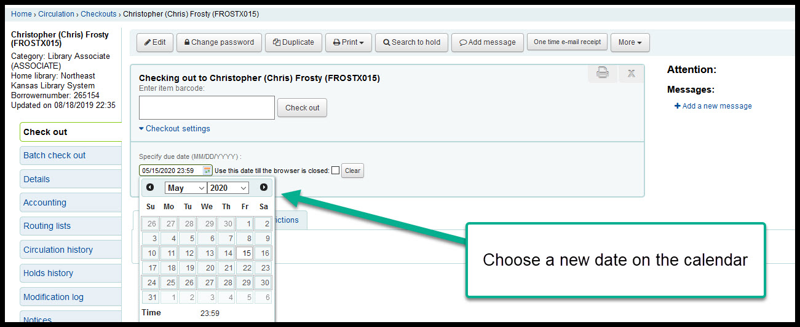

Modify a due date¶
It is possible to modify the due date on an item before you check the item out to a patron.
- From the check-out page in a patron’s account, click on the “Checkout settings” option under the input box
- Ignore the “Automtic renewal” checkbox
- Click on the calendar icon and select a new due date
 

- !OPTIONAL! - Check the “Use this date till the browers is closed” checkbox to set every due date for every patron to the new due date

- The new due date will show highlighted in green after each check-out